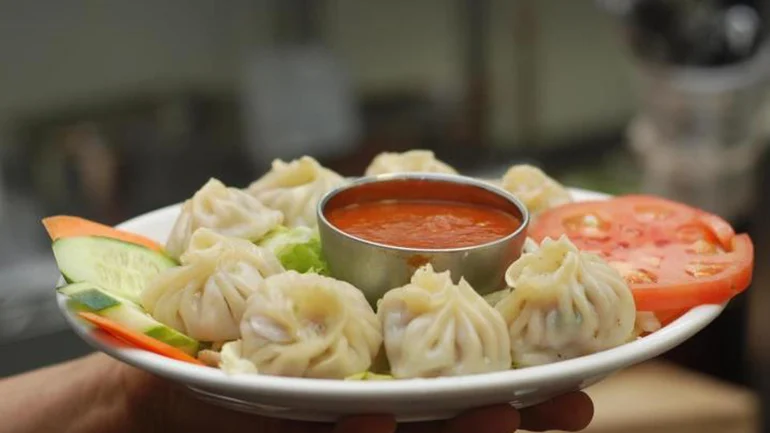

Mo:Mo

Mo:Mo is a traditional Nepali dish enjoyed across the country. It's popularity has also spread outside home. It is similar to dumplings but has a Nepali twist.
Ingredients
- Flour
- Onions
- Ground chicken
- Mo:mo masala
Recipe
- Knead dough from flour.
- Prepare fillings for Mo:mos using masala, ground chicken and onions to taste.
- Wrap the filling with the dough prepared beforehand.
- Let Mo:mos cook on steam